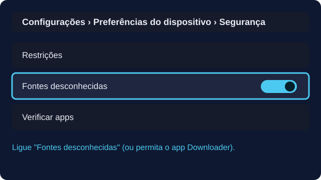
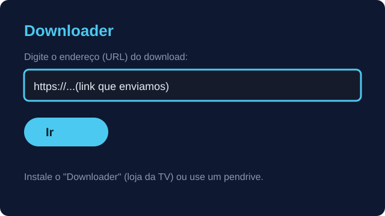
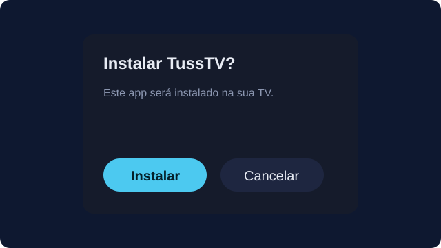
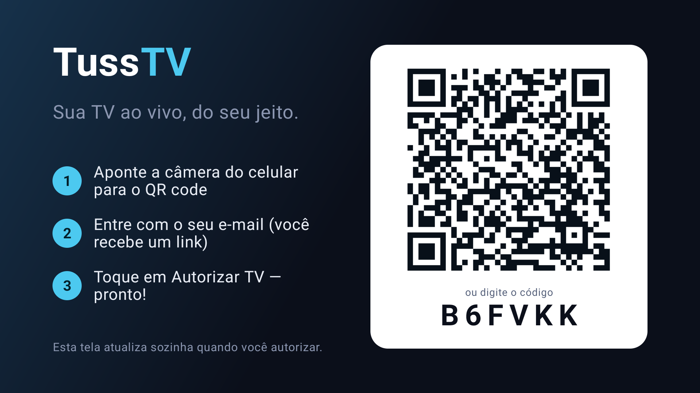

Sua TV ao vivo: canais organizados, guia de programação e favoritos.
Baixar o app (APK)Versão 0.3.69 · Android 6 ou mais novo · cerca de 5 MB
Conferência (SHA-256):
8d7542736dccc562afdb01cf55f42ccee4f9a2d96a056248c9bba5d86b61a8fb
Antes de começar
Funciona em TVs e aparelhos com Android TV / Google TV: Philips, Philco, Sony, TCL, Xiaomi (Mi Box/Mi TV), Chromecast com Google TV, Fire TV Stick e a maioria das TV boxes Android.
Não instala em TVs que não são Android: Samsung (Tizen), LG (webOS) e Roku TV. Nesses casos, use uma TV box ou um Chromecast com Google TV ligado na TV.
Você vai precisar do celular (para entrar pelo QR code) e de internet na TV.
Passo a passo
1Permita instalar apps de fora da loja
Na TV: Configurações › Preferências do dispositivo › Segurança e restrições › Fontes desconhecidas. Ligue a opção (ou permita para o app que você vai usar no passo 2). Em alguns modelos o aviso aparece só na hora de instalar.

2Baixe o arquivo na TV
Opção A (mais fácil): abra a loja da TV, instale o app gratuito Downloader, abra e digite o endereço desta página (o link que enviamos).
Opção B: no computador ou celular, baixe o arquivo, copie para um pendrive, ligue na TV e abra o arquivo pelo gerenciador de arquivos.

3Instale
Quando perguntar "Instalar TussTV?", escolha Instalar e depois Abrir. Se a TV avisar que o app não vem da loja, é normal: o arquivo é este mesmo (confira a sequência SHA-256 acima, se quiser).

4Entre com o celular
O app mostra um QR code. Aponte a câmera do celular, digite o seu e-mail, abra o link que chegar e toque em Autorizar TV. A TV entra sozinha.
Na primeira vez, o seu acesso fica aguardando liberação do administrador; assim que for liberado, os canais aparecem sozinhos.

Como usar
- Favoritar: segure o botão OK sobre um canal. Ele aparece em "Favoritos" e na tela inicial.
- Guia: a aba Guia mostra o que passa agora (com barra de progresso) e o que vem a seguir. Dentro do canal, aparecem programa atual e próximo.
- Trocar de canal: com o canal aberto, use ↑ ↓ (ou CH+/CH−).
- Buscar: botão Buscar no topo; a TV usa o teclado da tela.
- Canais 18+: pedem PIN (padrão 0000). Troque em Ajustes › Alterar PIN.
Recomendações
- Prefira internet por cabo ou Wi-Fi 5 GHz perto do roteador; para HD, 10 Mbps por TV costuma bastar.
- Se um canal travar, o app tenta sozinho outra fonte; se não voltar, aperte OK para tentar de novo ou troque de canal.
- Sem internet por instantes, o app continua abrindo com a última lista salva.
- Mantenha o app atualizado: quando enviarmos uma versão nova, baixe de novo por este mesmo link (os favoritos ficam).
- Não compartilhe este link nem o seu acesso. Baixe apenas por aqui.
- Em TVs com pouca memória, feche outros apps antes de abrir o TussTV. O modo leve liga sozinho.
Dúvida? fale com quem enviou este link.